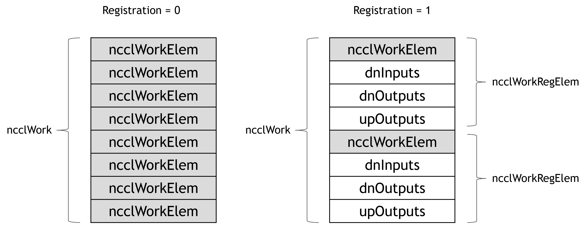

Algorithms like CollNet have few steps. In multi-process case, a copy from user buffer to intermediate buffer can acount for a large portion of latency of the entire operation.
One solution is to allow processes to directly access the user buffers of a remote process. This requires user buffer registration. Further, in intra-node context, this refers to enabling IPC connectivity between processes.
In general, user buffer registration implies persistency of collective operations. Currently, a persistent collective operation can be captured by a CUDA Graph. Thus, it becomes natural to implement user buffer registration under the umbrella of CUDA Graphs, saving the need for new APIs.
The new feature can be decomposed into three phases:
(I) Capturing phase:
i.a Enable IPC on user buffers
i.b Exchange IPC handles
(II) Enqueuing phase:
ii.a Fill buffer addresses into work elements
(III) CUDA kernel:
iii.a Read corresponding remote buffer addresses by corresponding thread groups
iii.b Void the scatter operation and have reducer directly pull from remote input buffer
iii.c Void the gather operation (direct push) or have gatherer directly pull from remote output buffer
(IV) De-registration:
iv.a Close IPC handles during CUDA Graph tear-down
Below are the details:
(I) Capturing phase
The registration occurs at the Graph capture phase. Each process will export an IPC handle for its input/output buffers. Then they exchange the handles via an intra-node all-gather. At last they open those handles from peer processes to get address pointers to those remote buffers. These address pointers will be stored at the Graph argument space.
(II) Enqueuing phase
When enqueuing the operation, the address pointers need to be filled into the work element arguments and passed to the CUDA kernel. Currently, a ncclWork contains 8 ncclWorkElem's, each of which is 64 bytes. An address pointer takes 8 bytes, so a ncclWorkElem can be converted into a space to fit 8 address pointers, which happens to correspond to 8 GPUs intra-node. We also need to account for the following three direct access scenarios:
(i) direct fetch from remote input buffers -- during scatter;
(ii) direct write into remote output buffers -- during broadcast;
(iii) direct pull from remote output buffers -- during gather.
Thus, we need a total of 3 ncclWorkElem's to fit these three sets of address pointers.

(III) CUDA kernel
In function setDataPtrs(...), we do not need to rely on inter-GPU buffer address exchange as before, because these addresses are now directly readable from ncclWorkRegElem. But we need to identify the address "provider" and "acceptor" roles based on the "direct" directions. For example:
Receiver -- Direct write -- Provider of output buffer
Sender -- Direct write -- Acceptor of output buffer
Sender -- Direct read -- (Scatter) provider of input buffer, or (Broadcast) provider of output buffer
Receiver -- Direct read -- (Reduce) Acceptor of input buffer, or (Gather) acceptor of output buffer
The new waitPeer(...) function will now provide 4 types of offset pointers:
(i) Pointer to shared network buffer;
(ii) Pointer to direct buffer if send/recv role matches direct read/write direction, e.g. send + write, or recv + read;
(iii) Null pointer if send/recv role does not match direct read/write direction, e.g. send + read, or recv + write
(iv) Pointer to intermediate buffer if direct is not enabled.
With the above change, whether the buffer is a remote buffer or a local intermediate buffer becomes transparent to the ReduceOrCopyMulti operation.
Corner case:
In order to support PreMulSum, where each rank can have a different scaler of their own, we also need to exchange the scalers at the beginning of the CUDA kernel. This is implemented in setDataPtrs(), by an LL-style (scaler + flag) exchange.
(IV) De-registration
We need to close IPC handles at the importers as soon as the CUDA Graph is being destroyed, because, if this is done after the exporter calls cudaFree() on the user buffers, a memory leak may occur.
Currently, the destroy function of cudaUserObject_t does not allow CUDA calls inside. Thus, we need to push those buffer addresses to a helper thread, and wake up the helper thread to close those handles for us.
Environment variable:
NCCL_GRAPH_REGISTER has been added. Set to 1 to enable this feature.
ncclWork has a new ncclWorkRegElem sub-format which conveys remote buffer addresses to CUDA kernels.
Author : Ke Wen